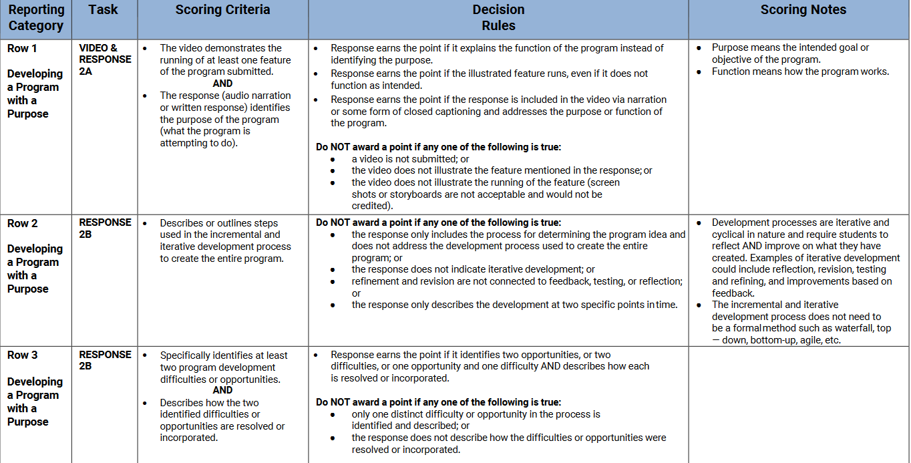
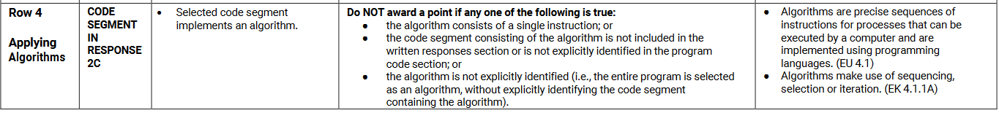
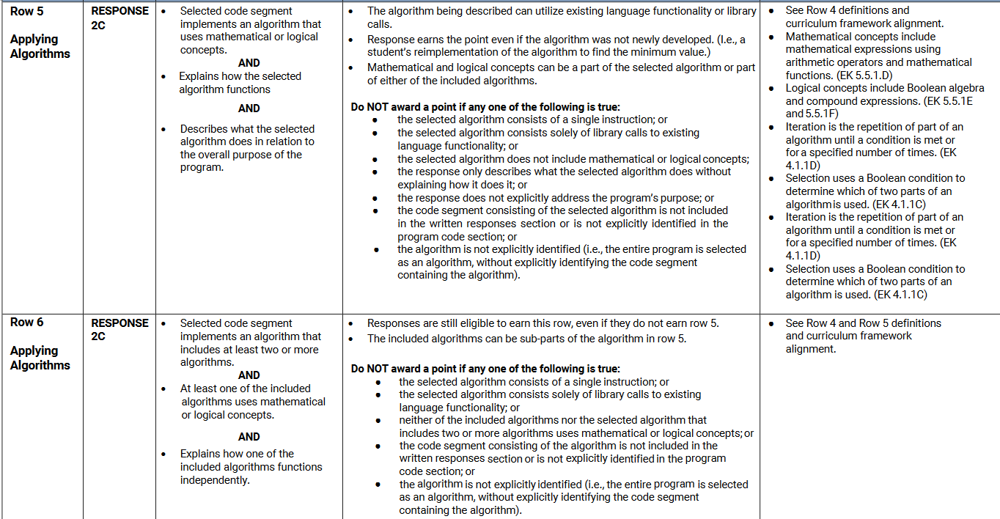
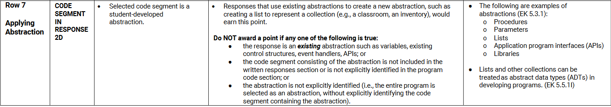
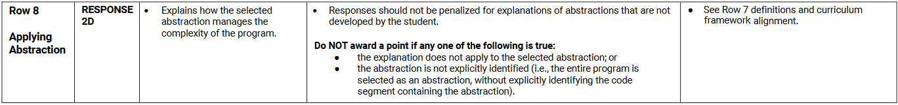

Overview
Create a computing program accompanied with a written response of the program's purpose.
Worth 24% of Exam Score ~ 12 hours to work in class.
Submission: Computing program (a digitally created code that serves its intended purpose that you create - examples include but aren't limited to: A small app, game, or program using Scratch, Alice, Code.org, etc.) + Typed Response. Both must be sumbitted to your Digital Portfolio
The link to the rubric can be found here and is also displayed below:
    
Be sure to pay attention to the "Scoring Criteria" on how to get points for all 8 rows! Make sure that you double check this rubric, especially in the "Decision Rules". This category dictates how points will be deducted if your Create Task falls under the "Do not award a point" category.
Let's use my Create Task as an example and look at how it is graded. The PDF of my written response is here. The video of my Create Task is here:
Row 1: +1 because the video captures all features of the program submitted AND the response (2A) identifies the purpose of the program.
Row 2: +1 because the incremental and iterative development process is present. (Use the words "incremental" and "iterative"!)
Row 3: +1 because a program difficulty and opportunity were mentioned, incorporated, and resolved.
Row 4: +1 because the code segment includes many algorithms (draw, createCat, endGame).
Row 5: +1 because the function: createCat includes random numbers (math). This algorithm's function is to "randomly select the number for the x and y-coordinates...of the cat object..." The createCat function's purpose individual to the overall purpose of the program is to "make the sprite animations work in the game."
Row 6: +1 because the draw() function includes at least 2 algorithms: createCat and endGame. The createCat function uses math and endGame uses logic. Both algorithms are mentioned to function independently from each other: createCat chooses the position of the cat sprite and endGame displays the game over screen.
Row 7: +1 because the abstraction is drawClouds. NOTE: Most often, abstractions are one of the two algorithms you used for response 2C.
Row 8: +1 because the response explains that drawClouds "helps manage the complexity of my program by being able to define the parameters once when the drawClouds() function is being called inside the draw() function instead of needing to type out each parameter individually, especially since each “cloud” has the same y-coordinate, width, and height."
Extra Notes: Notice how the rubric does not grade whether the abstraction uses math AND logic. This means that even though the response is asking you to include math and logic for your abstraction, you can get away with earning this point even if you don't have it. Don't you love loopholes?
Click here to go to the next Performance Task: Explore Task
Done with the Performance Tasks? Ready to head to the multiple choice portion of the exam?